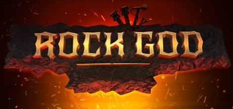

1º Lugar
The Pretender
Foo Fighters
Echoes, Silence, Patience & Grace
2007
What if I say I'm not like the others? What if I say I'm not just another one of your plays? You're the pretender What if I say I will never surrender?…
2º Lugar
You've Got Another Thing Comin'
Judas Priest
Screaming for Vengeance
1982
If you think I'll sit around as the world goes by You're thinking like a fool, cause it's a case of do or die Out there is a fortune waiting to be had If you think I'll let it go, you're mad You've got another thing coming…
3º Lugar
Ich Mach Was Mit Medien
We butter The Bread With Butter
Wieder Geil!
2015
Auf Instagram, da zeigst du dich Doch ´ne Meinung hast du nicht Sogar in den Ferien Machst du was mit Medien…
4º Lugar
The Vampyre Of Time and Memory
Queens Of The Stone Age
...Like Clockwork
2013
You think the worst of all Is far behind The Vampyre of time and memories, has died I've survived, I speak, I breathe, I'm incomplete, I'm alive, hurray! You're wrong again cause I feel no love Does anyone ever get this right…
5º Lugar
Der Kleine Vampir
We butter The Bread With Butter
Der Tag an dem die Welt unterging
2010
Hey Boys, Hey Girls! We wanna see you dance. Move your Body, shake your Body, Come on! Ich kann nicht tanzen, mann was will sie von mir? Ich geh nach Haus und trinke Blut, Ich bin der kleine Vampir!…
6º Lugar
No One Knows
Queens Of The Stone Age
Songs for the Deaf
2004
Oh, what you do to me No one knows And I realize you're mine Indeed a fool of mine And I realize you're mine Indeed a fool of mine…
7º Lugar
Tears Don't Fall
Bullet for My Valentine
The Poison
2005
Your tears don't fall, they crash around me Her conscious calls, the guilty to come home Your tears don't fall, they crash around me Her conscious calls, the guilty to come home…
8º Lugar
Scream, Aim, Fire
Bullet for My Valentine
Scream, Aim, Fire
2008
Over The Top,Over The Top Right Now Its Killing Time Over The Top,Over The Top The Only Way Out Is To Die God Has Spoken Through His Conscience As I Scream, Aim And Fire The death toll grows higher…
9º Lugar
Ich Tu Dir Weh
Rammstein
Liebe ist für alle da
2009
Ich tu dir weh Tut mir nicht leid Das tut dir gut Hört wie es schreit…
10º Lugar
Pyroman & Astronaut
We butter The Bread With Butter
Goldkinder
2013
Will dich mit auf Reisen nehmen Will dich im Feuer sehen Ich steig' mit dir ins Himmelsheer Steig mit mir ins brennende Meer…
11º Lugar
Times Like These
Foo Fighters
One By One
2002
It's times like these you learn to live again It's times like these you give and give again It's times like these you learn to love again It's times like these time and time again…
12º Lugar
Alles Was Ich Will
We butter The Bread With Butter
Goldkinder
2013
Ich bin ein könig, ich bin ein star. Ich bin das feuer, ich bin wieder da. Ich bin unsterblich, ich bin niemals still. Ich bin unendlich, ich bin alles was ich will.…
13º Lugar
Little Sister
Queens Of The Stone Age
Lullabies to Paralyze
2005
I wanna show you all my love I wanna be the only one I know you like nobody ever, baby Little sister can't you find another way No more livin life behind a shadow…
14º Lugar
Mein Land
Rammstein
Made In Germany
2011
Wohin gehst du, wohin? Ich geh mit mir von Ost nach Süd Wohin gehst du, wohin? Ich geh mit mir von Süd nach West…
15º Lugar
Waking The Demon
Bullet For My Valentine
Scream, Aim, Fire
2008
Waking The Demon, Where'd ya run to? Walking in shadows, Watch the blood flow, There's not much longer, so don't try to fight, Your bodie's weakening, walk to the light, Those painful times, so alone, so ashamed, I'm not coming back, there's nothing to gain…
16º Lugar
Run
Foo Fighters
Concrete and Gold
2017
Wake up Run for your life with me Wake up Run for your life with me In another perfect life In another perfect light We run…
17º Lugar
Something From Nothing
Foo Fighters
Sonic Highways
2014
Oh sweet ignition, be my fuse You had no choice you have to choose Bid farewell to yesterday Say goodbye I'm on my way But in the end we all Come from what's come before So here I go…
18º Lugar
Anarchy
We butter The Bread With Butter
Wieder Geil!
2015
This is our night, we are the anarchy Burn it down, burn it down, we are the living nightmare (This is our fight!) We need no kings and queens, turn it down, turn it down Show them we own the streets! Let's go out, break it down!…
19º Lugar
Go With The Flow
Queens Of The Stone Age
Songs for the Deaf
2004
She said "I'll throw myself away, They're just photos after all" I can't make you hang around. I can't wash you off my skin. Outside the frame, is what we're leaving out You won't remember anyway…
20º Lugar
Electric Eye
Judas Priest
Screaming for Vengeance
1982
I'm made of metal My circuits gleam I am perpetual I keep the country clean I'm elected electric spy I'm protected electric eye…